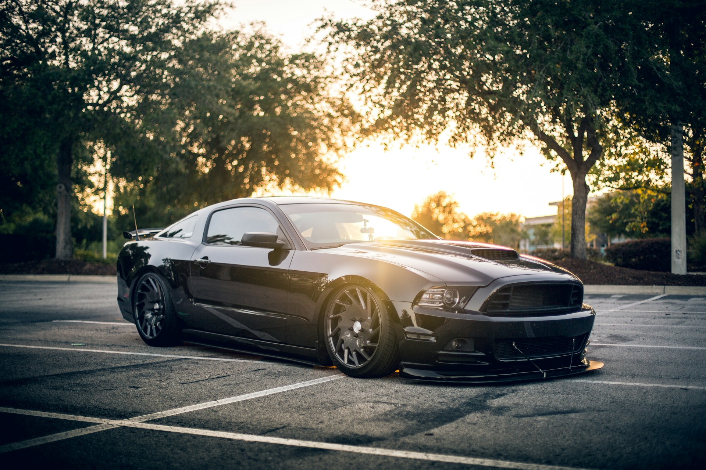

Mustangs are my favorite!
- Mach 1
- Shelby
- GT350
- GT500
Muscle cars are the best!
The Ford Mustang is an American automobile manufactured and marketed by Ford since 1964, as Ford's longest nameplate in continuous production. Currently in its seventh generation, it is the fifth-best selling Ford car nameplate. The namesake of the "pony car" automobile segment, the Mustang was developed as a highly styled line of sporty coupes and convertibles derived from existing model lines, initially distinguished by its pronounced "long hood, short deck" proportions. -Wikipedia
The Mustang I was a two-seater concept car that also borrowed from European styling notes. Two versions of this small, sporty model, with a mid-mounted engine and side flow scoops for cooling, were created. First a fiberglass show car and a second fully functioning vehicle that premiered at Watkins Glen on October, 1962. The Watkins Glen premiere created phenomenal excitement as people poured from the stands to surround the car. Both versions were also used extensively at car shows and were toured around college campuses to gauge interest in the smaller sports cars. -Ford
